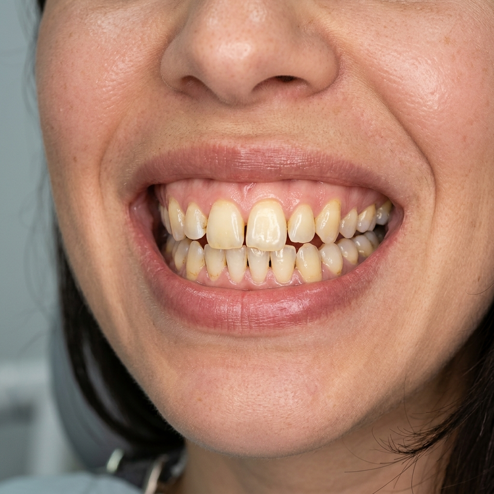
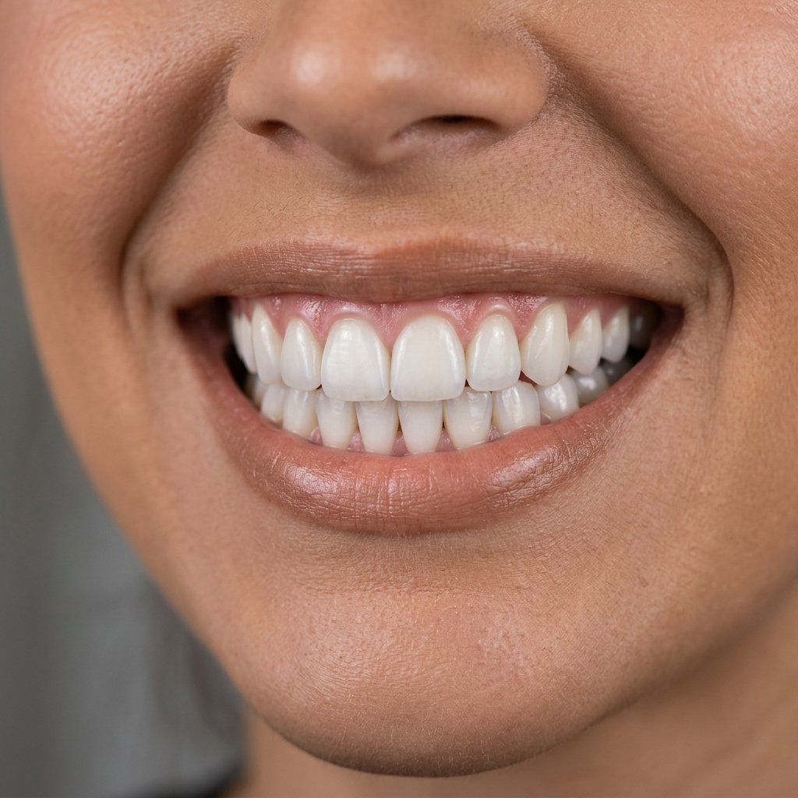

Casos Clínicos
Antes e
Depois.
Cada resultado é único. Os casos a seguir são uma seleção de transformações reais, realizadas na clínica nos últimos três anos. Arraste o divisor para comparar.




Estética Odontológica — Jardins · São Paulo
Atendimento individual. Diagnóstico personalizado.
Resultados que duram décadas.
Finas lâminas de porcelana que remodelam o sorriso com precisão milimétrica, corrigindo cor, formato e alinhamento de forma definitiva e minimamente invasiva.
Equilíbrio das proporções do rosto com naturalidade, realçando a beleza única de cada paciente. Preenchimentos estruturais e toxina botulínica de alta precisão.
Restabelece a função mastigatória e a estética global do sorriso. Planejamento minucioso que devolve segurança e conforto absolutos a longo prazo.
Casos Clínicos
Cada resultado é único. Os casos a seguir são uma seleção de transformações reais, realizadas na clínica nos últimos três anos. Arraste o divisor para comparar.


O que dizem
Pela primeira vez na minha vida adulta, não penso no meu sorriso antes de sorrir.
O diagnóstico foi tão detalhado que eu entendi cada etapa antes de qualquer procedimento. Essa clareza muda tudo.
Resultado invisível para quem não sabe que houve intervenção. Exatamente o que eu precisava.
Localização e Contato